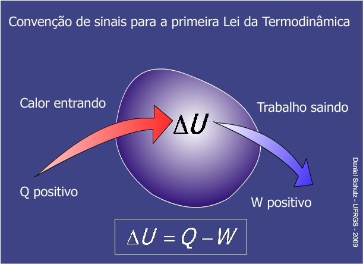

A termodinâmica é uma área da Física que estuda as diferentes transferências de energia. Ela Busca compreender relações entre calor, energia e trabalho, analisando as quantidades de calor trocadas e os trabalhos realizados nesse processo físico.
A primeira lei da termodinâmica é uma consequência direta da lei da conservação da energia. De acordo com este princípio, a energia total de um sistema permanece sempre constante, pois não é perdida, mas transformada.
No quadro da termodinâmica existem conceitos menos específicos e gerais usados nos princípios de conservação de energia. Na primeira lei da termodinâmica, usamos conceitos como energia interna, calor e trabalho, que são relevantes para a finalidade das máquinas térmicas (utilizações tecnológicas fundamentais para a termodinâmica).
Fórmula da Primeira Lei da Termodinâmica:
ΔU – variação de energia interna (cal ou J)
Q – calor (cal ou J)
τ – trabalho (cal ou J)
Para usarmos essa fórmula, precisamos nos atentar para algumas regras de sinais:
ΔU – será positivo, se a temperatura do sistema aumentar;
ΔU – será negativo, se a temperatura do sistema diminuir;
Q – será positivo, se o sistema absorver calor do meio externo;
Q – será negativo, se o sistema ceder calor ao meio externo;
τ – será positivo, se o sistema se expande, realizando trabalho sobre o meio externo;
τ – será negativo, se o sistema se contrair, recebendo trabalho do meio externo.
Variação da energia interna:
O termo ΔU refere-se à mudança de energia atribuída à energia cinética das partículas constituintes do sistema, no caso de um gás ideal, pode-se dizer que ΔU equivale a:
n – número de mols (mol)
R – constante universal dos gases ideais (0,082 atm.l/mol.K ou 8,31 J/mol.K)
T – temperatura absoluta (kelvin)
Analisando as fórmulas, pode-se perceber que, caso não ocorra uma mudança de temperatura no sistema, sua energia interna também permanecerá inalterada. Além disso, é importante dizer que para as máquinas térmicas, que operam em ciclos, a variação da energia interna, ao final de cada ciclo, deve ser nula, pois nesse ponto, o motor volta a operar com a temperatura inicial.
Veja também: Rendimento das máquinas térmicas: como se calcula?
Calor:
Q, que se refere à quantidade de calor transferida para o sistema, costumamos utilizar a equação fundamental da calorimetria, mostrada a seguir:
Q -calor (cal ou J)
m – massa (g ou kg)
c – calor específico (cal/gºC ou J/kg.K)
ΔT – variação de temperatura (celsius ou kelvin)
Trabalho:
A última das grandezas relacionadas à Primeira Lei da Termodinâmica é o trabalho (τ), que tem uma fórmula analítica apenas para as transformações que ocorrem sob pressão constante, também conhecidas como transformações isobáricas, observe:
P – pressão (Pa ou atm)
ΔV – variação de volume (m³ ou l)
Quando a pressão exercida sobre o sistema não for constante, o trabalho poderá ser calculado pela área do gráfico de pressão em função do volume (P x V).
A segunda lei da termodinâmica envolve a transferência de energia térmica. Isso significa que mostra que a troca de calor tende a equilibrar diferentes temperaturas (equilíbrio térmico), o que acontece de forma espontânea. Seus princípios são: O calor é transferido espontaneamente de um objeto de alta temperatura para um objeto de baixa temperatura. Todo processo tem perdas porque seu rendimento está sempre abaixo de 100%. É representado pela seguinte fórmula:
Fórmula para calcular o rendimento de acordo com a segunda lei da termodinâmica Onde:
η: Renda
QA: Calor fornecido pelo aquecimento
QB: Calor não convertido em trabalho
A lei foi estabelecida com base na pesquisa de Sadi Carnot (1796-1832). Inspirado na Revolução Industrial, o físico francês investiga a possibilidade de tornar as máquinas mais eficientes. Ao analisar motores térmicos, Carnot descobriu que eles eram mais eficientes quando o calor era transferido da temperatura mais alta para a temperatura mais baixa. Isso sempre acontece nesta ordem, afinal a transferência de energia térmica é um processo irreversível. Isso significa que o trabalho depende da transferência de energia térmica, lembre-se que é impossível converter todo o calor em trabalho. Clausius e Kelvin se basearam nas ideias de Carnot e basearam suas pesquisas na termodinâmica.